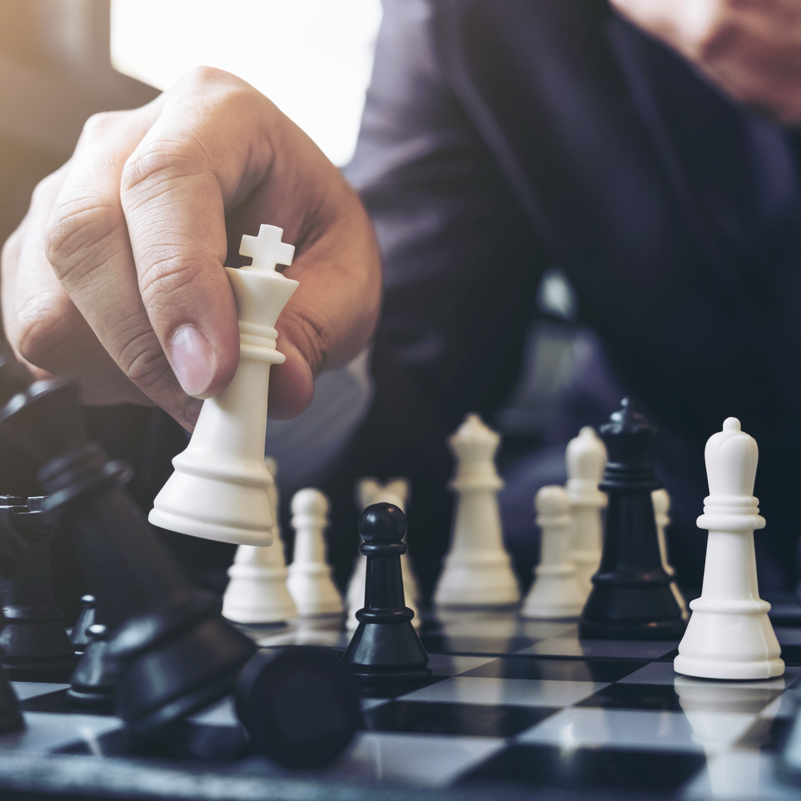

 A healthy mind and a fit body contribute greatly in shaping the golden future of a child. Unless the child is made to practice mental exercises in addition to physical exercises as he grows up, he would eventually experience problems such as mental numbness, forgetfulness, loss of concentration, or a whole lot of serious mental disorders like Alzheimer’s, or dementia as he grows old. Board games such as Chess, Scrabble, or Chinese Checker greatly aid in developing the muscles of the brain because they involve different areas of the brain and engaging in these board games directly contributes towards the sharpening of the brain. For long, chess has been considered as a game played only by intellectuals and individuals with critical thinking abilities. However, the fact is that chess can be played by people of all age groups and mind sets. Chess is extremely helpful in brain development, particularly when it is played regularly from a very early age. Mentioned below are some of the most important benefits that children can avail by practicing chess on a regular basis –
Playing the game of Chess on a regular basis right from the childhood improves the learning, thinking, analytical power, and decision-making ability of the child. Chess makes the child learn how to strategize aspects of the game and life. In addition, a child can also learn the importance of foresight, and planning. Playing the game of Chess on a regular basis right from the childhood teaches the importance of being disciplined in life. Practicing Chess regularly also aids in improving the self-confidence of the child, which is extremely essential for the child’s growth. In the game of chess, a child learns to do a thorough analysis, research, and assessment of the situation before making any decision. Such an exercise provides mental clarity to the child. Mental clarity and mental dexterity is required for solving problems, analyze consequences, and formulate future tactics. Children playing chess from an early age exhibit extraordinary memory skills. Chess also helps in improving concentration and academic performance of the child. On a whole, playing the game of chess is essential for transforming a child into a responsible, disciplined, and wise human being.